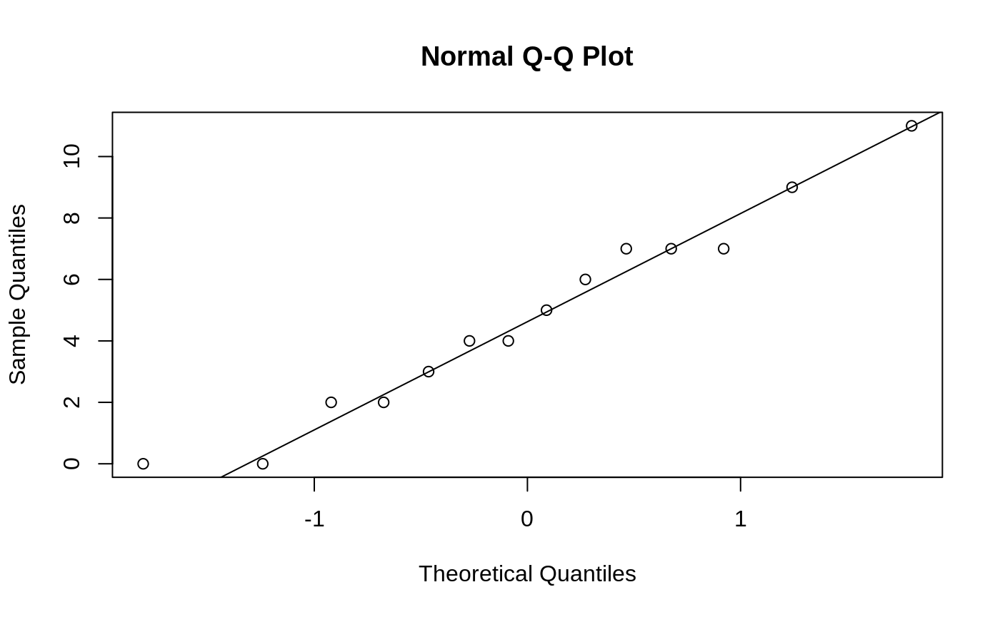
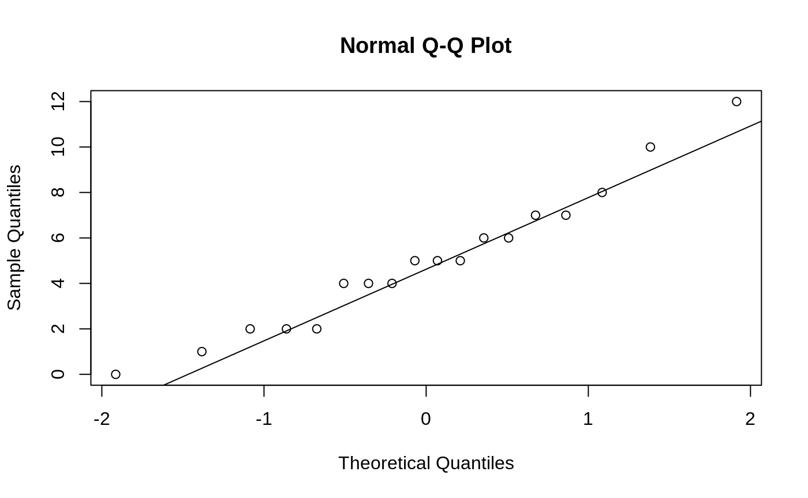
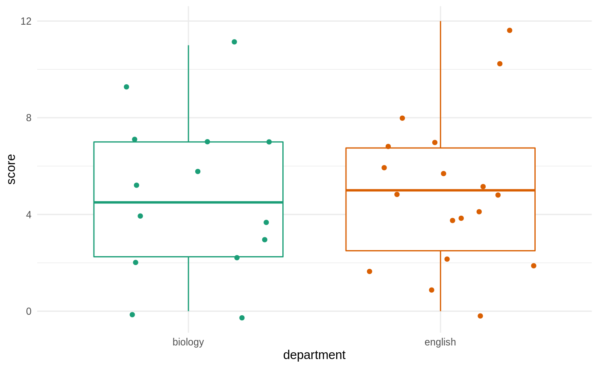

In this vignette, we work through a two sample Z-test. If you haven’t seen a one-sample Z-test, we recommend you read vignette("one-sample-z-test") first.
Let’s suppose that a student wants to figure out if biology professors or English professors know more memes. The student writes a meme quiz and springs it on 14 unsuspecting biology professors and 18 unsuspecting English professors during office hours.
The biology professors get the following scores:
\[ 3, 7, 11, 0, 7, 0, 4, 5, 6, 2, 4, 7, 2, 9 \]
and the English professors score:
\[ 5, 5, 4, 5, 4, 5, 7, 2, 6, 2, 2, 7, 2, 6, 4, 2, 5, 2 \]
We’ll assume that the population variance of the biology professor scores is \(\sigma^2_1 = 3\) and the population variance of the English professor scores is \(\sigma^2_2 = 2\).
Before we can do a Z-test, we need to make check if we can reasonably treat the means of each sample as normally distributed. This happens is the case of either of following hold:
Since both of samples have less than 30 data points, we need to check if they are plausibly from normal distributions. We check the biology professor scores first using a normal quantile-quantile plot.
biology <- c(3, 7, 11, 0, 7, 0, 4, 5, 6, 2, 4, 7, 2, 9)
english <- c(8, 5, 4, 10, 4, 5, 7, 2, 6, 1, 2, 7, 0, 6, 4, 12, 5, 2)
qqnorm(biology)
qqline(biology)
Since the biology scores lies close the line \(y = x\), and has no notable systematic deviations from line, it’s safe to treat the sample as coming from a normal distribution. Honestly this quantile-quantile plot is so good it’s suspicious.
Anyway, next we check the English scores

And it seems fine as well. We can also create side-by-side boxplots of the data using the ggplot2 package to get a nice comparison of the two groups. This requires a little bit of data manipulation:
library(ggplot2)
# make a data frame in long format for plotting
test_results <- data.frame(
score = c(biology, english),
department = c(
rep("biology", length(biology)),
rep("english", length(english))
)
)
ggplot(test_results, aes(x = department, y = score, color = department)) +
geom_boxplot() +
geom_jitter() +
scale_color_brewer(type = "qual", palette = 2) +
theme_minimal() +
theme(legend.position = "none")
Based on eye-balling the data, we’d be pretty surprised if we rejected a null hypothesis of equal means between the two groups.
Let’s write the null hypothesis out (here we treat biology professors as group 1 and English professors as group 2):
\[ H_0: \mu_1 - \mu_2 = 0 \qquad H_A: \mu_1 - \mu_2 \neq 0 \]
First we need to calculate our Z-statistic. Let’s use do this with R. Remember that the Z-statistic is defined as
\[ Z = \frac{\bar x_1 - \bar x_2 - \delta_0} {\sqrt{\sigma_1^2 / n_1 + \sigma_2^2 / n_2}} \sim \mathrm{Normal}(0, 1) \]
In R this looks like:
To calculate a two-sided p-value, we need to find
To do this we need to c.d.f. of a standard normal
library(distributions)
Z <- Normal(0, 1) # make a standard normal r.v.
1 - cdf(Z, 0.376) + cdf(Z, -0.376)
#> [1] 0.7069169Note that we saved z_stat above so we could have also done
which is slightly more accurate since there is no rounding error.
So our p-value is about 0.71. You should verify this with a Z-table. Note that you should get the same value from cdf(Z, -0.376) and looking up -0.376 on a Z-table.
You may also have seen a different formula for the p-value of a two-sided Z-test, which makes use of the fact that the normal distribution is symmetric:
Using this formula we get the same result:
Finally, sometimes we are interest in one sided Z-tests. For the test
the p-value is given by
\[ P(Z > -0.376) \]
which we calculate with
For the test
\[ H_0: \mu \ge 3 \qquad H_A: \mu < 3 \]
the p-value is given by
\[ P(Z < -0.376) \]
which we calculate with